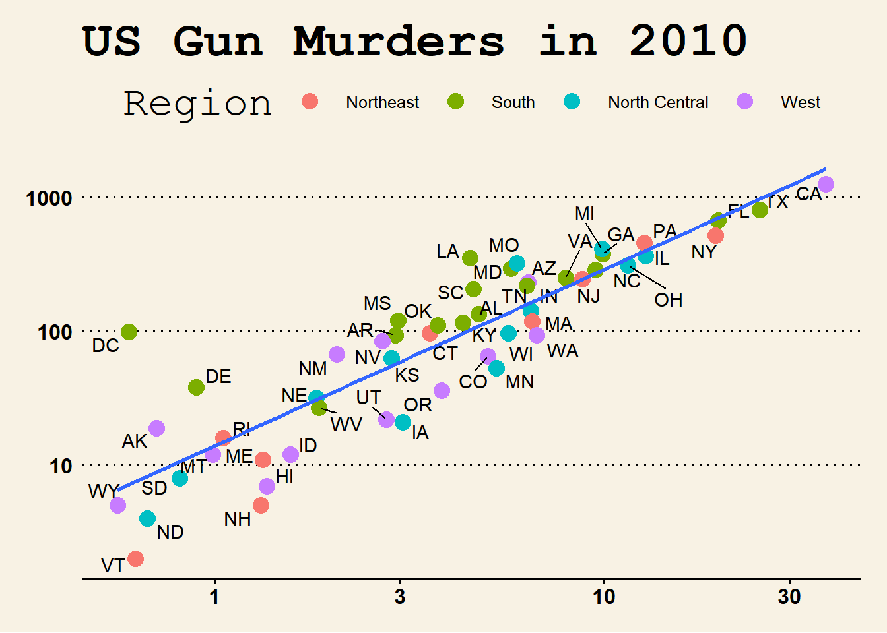

Code
# loading packages
library(tidyverse)
library(knitr)
library(ggthemes)
library(ggrepel)
library(dslabs)Kernel regression is a non-parametric estimator that estimates the conditional expectation of two variables which is random. The goal of a kernel regression is to discover the non-linear relationship between two random variables. To discover the non-linear relationship, kernel estimator or kernel smoothing is the main method to estimate the curve for non-parametric statistics. In kernel estimator, weight function is known as kernel function (Efromovich 2008). Cite this paper (Bro and Smilde 2014). The GEE (Wang 2014).
The common non-parametric regression model is \(Y_i = m(X_i) + \varepsilon_i\), where \(Y_i\) can be defined as the sum of the regression function value \(m(x)\) for \(X_i\). Here \(m(x)\) is unknown and \(\varepsilon_i\) some errors. With the help of this definition, we can create the estimation for local averaging i.e. \(m(x)\) can be estimated with the product of \(Y_i\) average and \(X_i\) is near to \(x\). In other words, this means that we are discovering the line through the data points with the help of surrounding data points. The estimation formula is printed below (R Core Team 2019):
\[ M_n(x) = \sum_{i=1}^{n} W_n (X_i) Y_i \tag{1} \] \(W_n(x)\) is the sum of weights that belongs to all real numbers. Weights are positive numbers and small if \(X_i\) is far from \(x\).
A study was conducted to determine how…
# loading packages
library(tidyverse)
library(knitr)
library(ggthemes)
library(ggrepel)
library(dslabs)# Load Data
kable(head(murders))| state | abb | region | population | total |
|---|---|---|---|---|
| Alabama | AL | South | 4779736 | 135 |
| Alaska | AK | West | 710231 | 19 |
| Arizona | AZ | West | 6392017 | 232 |
| Arkansas | AR | South | 2915918 | 93 |
| California | CA | West | 37253956 | 1257 |
| Colorado | CO | West | 5029196 | 65 |
ggplot1 = murders %>% ggplot(mapping = aes(x=population/10^6, y=total))
ggplot1 + geom_point(aes(col=region), size = 4) +
geom_text_repel(aes(label=abb)) +
scale_x_log10() +
scale_y_log10() +
geom_smooth(formula = "y~x", method=lm,se = F)+
xlab("Populations in millions (log10 scale)") +
ylab("Total number of murders (log10 scale)") +
ggtitle("US Gun Murders in 2010") +
scale_color_discrete(name = "Region")+
theme_wsj()